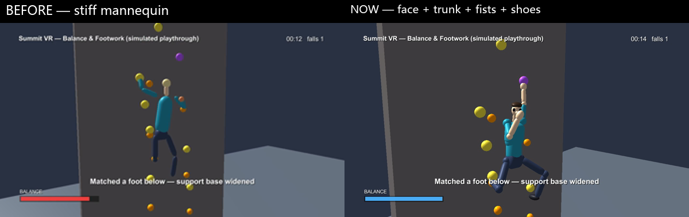

在只有头 + 两手柄的普通 VR 上，把真实抱石的两件核心——身体平衡 与 脚法落点——做成可玩机制。
现状：The Climb · Gorilla Tag —— 舒适、不晕、商业成功。但掉下来只有两种原因：松手 或 够不到。
真实抱石恰恰相反：难点常常不在手有多大力，而在重心怎么落在脚上、要不要换脚、会不会「开门」(barn-door) 被甩出去。
2026 新出的平面游戏 New Heights 主打的正是平衡 / 脚法 → 玩家确实想要这一层。
市面 VR 攀岩把真实攀岩最核心的脚法和身体平衡全砍了。
Summit VR 把这一层补回来——而且只用消费级硬件。
只用 3 个追踪点（头+两手柄，无脚部追踪）。看头有没有歪出支撑范围——这就是平衡判定。
不是 IK 腿。虚拟脚自动吸附到身体下方的脚点，撑宽支撑面，不去渲染会穿模的假腿。
带迟滞 + 缓冲时间，不是一下子掉。可预警、可救回——是技巧判定，不是掷骰子。
真实墙实验：「脚」比「手」更影响动作准确感与攀爬乐趣。
→ 告诉我们为什么值得做脚
头当重心、头歪出无支撑脚即判掉落（n=24 已验证）。
→ 告诉我们怎么用头做平衡判定
机器人平衡理论提供形式化词汇：支撑多边形 · ZMP(零力矩点) · capture point —— 说明可信的平衡不需要昂贵追踪或全身 IK，几何判据足矣。
14 个 C# 脚本，三命名空间：Climbing(攀爬+平衡核心) · Gameplay(规则+线路) · UI/Util(HUD+触觉)。所有对 BalanceSystem / FootPlacementSystem 的引用都做了 null 检查。
所有接触点（抓住的手点 + 踩住的脚点）投影到墙横轴，得到跨度 [low, high]。
头的横向位置在区间内 → 稳（条回升）；歪出去 → 不稳（缓冲 0.35s 后条下掉）。
救法：踩一只脚 / 抓对侧点 → 撑宽区间 → 重心回到里面。
不是物理仿真——是轻量几何判据：可调、可解释、跑得动。核心 ClimbMath.StabilityScore，纯函数 + 9 条单测。
从头往下估一个「落脚区」，左右各找最近的脚点吸住；爬过去后脱离再吸下一个（foot-gluing）。
为什么不用 IK / 生成式腿？在贴墙、高抬腿、侧身时会崩、会穿模，且与机制无关——我们要的只是「脚在哪、撑不撑得住」这个信息。
演示里的人形是阻尼弹簧摆 + 两段 IK 做的「有重量感」运动学表现（纯演示、不进游戏逻辑），对标物理攀岩游戏 Klifur 逐帧打磨。
| 系统 | 常量 | 值 |
|---|---|---|
| BalanceSystem | supportMargin | 0.06 m |
| BalanceSystem | maxOvershoot | 0.30 m |
| BalanceSystem | drain / regen | 0.6 / 0.7 /s |
| BalanceSystem | graceTime | 0.35 s |
| FootPlacement | footReach | 0.45 m |
| ClimbingHand | ArmReach 臂展 | ~0.88 m |
| ClimbController | gravity | −9.81 m/s² |
颜色现在只是建议、不再硬限制——和真实岩壁一样，手脚都能用任意点。
默认线路故意不可纯手通过：两手都在右边 → 重心出界 → 必须踩左脚或 flag。脱落 → 重生回检查点 → 顶部 “Summit!” + 计时。
The Gap 演示「臂展是真约束」：中段留 2m 空白，无论怎么伸都够不到——手臂会伸直但够不着，验证了 ~0.88m 臂展限制不是摆设。
线路用 RouteBuilder 从基本几何体程序化搭建——墙 + 彩色握点 + 登顶触发器，无需美术也能跑。
引擎端到端
SimulatedClimber 驱动真实 gameplay：失衡→脱落→重生→登顶
平衡 / 位移数学
ClimbMath 纯函数单测
真人可玩视角
第三人称 Play.unity / 第一视角 VR.unity，键鼠即玩
CharacterController.minMoveDistance 默认 0.001m 会吞掉慢速攀爬的每帧位移，导致「爬不动」——纯看代码发现不了，只有真在引擎里跑才暴露。已修复并纳入回归。

身体挂在手上而非顶在头上：骨盆是阻尼重力摆，单手悬挂时整个躯干倒向那只手（对角张力）。
头朝岩壁、被钳制在脖子活动锥内；脊柱转髋贴墙（带约束）；肘膝不反关节，够不到的握点手臂伸直但差一截。
工作流：无头渲染逐帧 → ffmpeg 合成 → 与 climbing.gif 逐帧比对 → 改 → 再渲染。每轮都跑端到端自检，始终 10/10。
被试内对比（同线路、顺序平衡）：A 纯手 vs B 平衡+脚法。
指标：登顶时间 · 跌落按原因分（松手/失衡/体力）· 平衡余量曲线 · NASA-TLX · SSQ · 真实感量表（n≈5–8）。
核心假设 H：B 的 真实感↑ · 挑战↑，但 晕动 SSQ 不升——挑战来自决策难度而非运动冲突，这是市面 VR 攀岩都没有的差异化卖点。
① 真的把评测跑了，填上空表
② 一维区间 → 2D 支撑多边形（加前后向平衡）
③ 玩家自主选脚点（取代纯自动吸附）
④ 用手柄位置改进重心估计
⑤ 真机 Quest 构建 + 帧率 / 舒适度 vignette
提交：GitHub 链接 + demo 视频（7/2）
脚法和平衡，可以廉价、加法式地加进纯手柄 VR 攀岩。剩下的工作，是去测它到底有没有让体验更像真攀岩。
在只有头 + 两手柄的普通 VR 上，用头当重心 + 自动吸附的抽象落脚点，把「重心有没有落在支撑面内」变成可玩的失衡-脱落机制。
同侧硬够不踩脚就会被甩下墙，踩对脚就稳住。